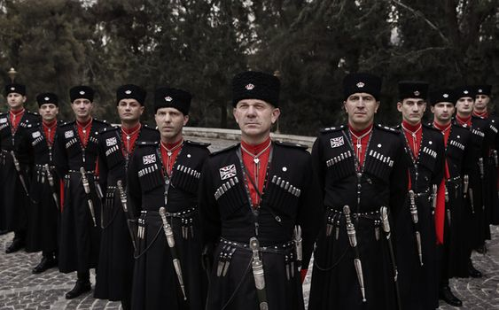

im circassian but i was born in Jordan .
The Circassians are an indigenous ethnic group originating from the North Caucasus, known for their rich cultural heritage and a history marked by significant resilience.
im circassian but i was born in Jordan .
The Circassians are an indigenous ethnic group originating from the North Caucasus, known for their rich cultural heritage and a history marked by significant resilience.
They arrived in Jordan during the late 19th century as refugees following the Russo-Circassian War and the subsequent genocide in their homeland in the North Caucasus.
Later on they where trusted by the royal family and were assigned to become royal guirds.
the population of circassians in jordan is around 100 thousand mostly living in amman
